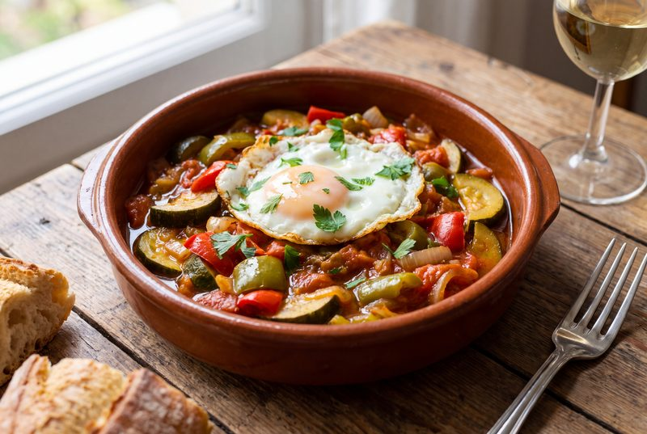
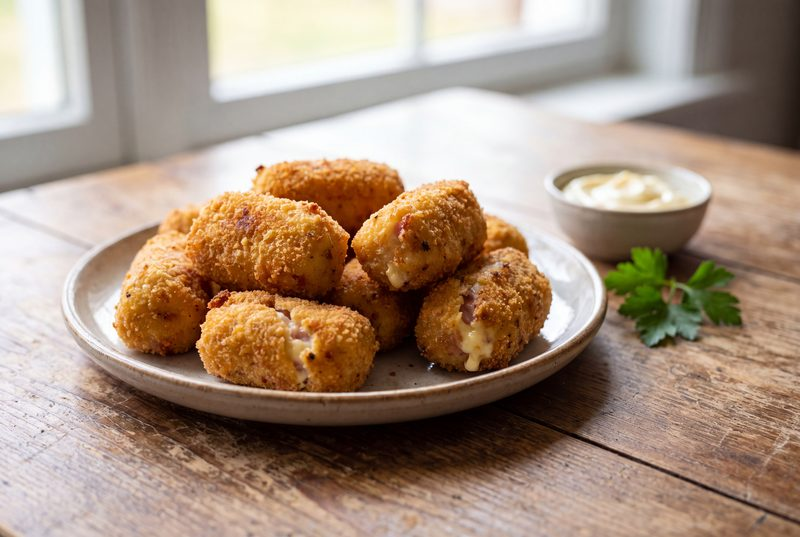
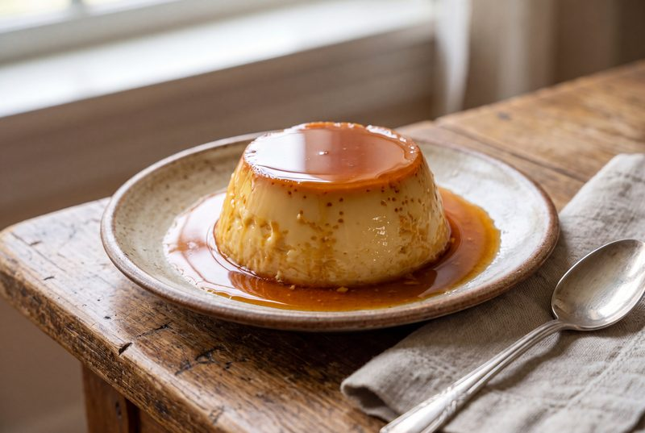

Arroces
Paella valenciana
Arroz, sofrito, azafrán y socarrat. El plato de domingo por excelencia.
Ver la recetaTodas nuestras recetas en un vistazo. Usa los filtros para encontrar el tipo de plato que te apetece.
Arroz, sofrito, azafrán y socarrat. El plato de domingo por excelencia.
Ver la receta
Patata, huevo y buena mano. Jugosa por dentro y dorada por fuera.
Ver la receta
La sopa fría que salva cualquier verano. Tomate, pepino y pan.
Ficha en preparación

Calabacín, pimiento y tomate a fuego lento. Sencillo y reconfortante.
Ficha en preparación

Cremosas por dentro y crujientes por fuera. El aprovechamiento perfecto.
Ficha en preparación

El postre de la abuela, con su caramelo y su textura sedosa.
Ficha en preparación